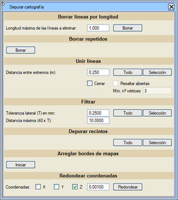
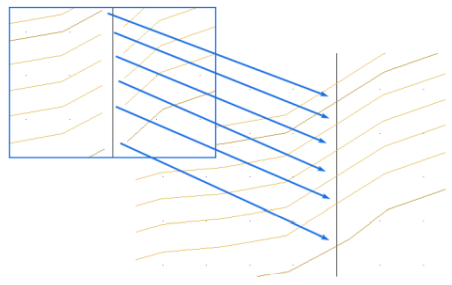

|
|
|
HARİTA TEMİZLİĞİ
|
|
Uzunluğa Göre Çizgileri Sil
Tekrarlananları Sil Çizgileri Birleştir Filtrele / Seyrelt Kapalı Alanları Temizle Pafta Kenarlarını Düzelt Koordinatları Yuvarla 
Uzunluğa Göre Çizgileri Sil Kullanıcı tarafından belirtilen uzunluğa eşit veya daha kısa olan tüm çizgileri siler. Önceden yapılan seçimi dikkate almadan, TÜM harita verisi üzerinde işlem yapar. Diğer programlardan gelen ve rahatsız edici olabilecek çok kısa uzunluktaki çizgileri (çizgi süslemelerinden kalan artıklar, çit detayları vb. "kılçıklar") içeren haritalar için kullanışlıdır. Tekrarlananları Sil Tüm aktif objeler üzerinde çalışan bu seçenek, aşağıdakileri silmeyi sağlar:
Çizgileri Birleştir Uçlar Arası Mesafe (m) kutusundaki değeri dikkate alarak çizgileri birleştirmeyi sağlar. Tümü düğmesiyle tüm çizgiler üzerinde, Seçim düğmesiyle ise seçili çizgiler üzerinde işlem yapar. Kapat seçeneğini etkinleştirirsek, ilk ve son köşe noktaları arasındaki mesafe Uçlar Arası Mesafe (m) değerinden küçükse çoklu doğruları kapatır. Bu seçenek aşağıdaki ek seçeneklerle birlikte gelir:
Filtrele / Seyrelt Bu seçenek, çok yoğun köşe noktasına sahip çizgilerin olduğu durumlarda kullanışlıdır. Filtreleme işlemine tabi tutulan çizgilerin köşe noktalarını (Tümü düğmesi tüm çizgilerde, Seçim düğmesi ise seçili çizgilerde çalışır) belirtilen temizleme parametrelerine göre siler:
Tekrarlanan noktalara sahip olabilen veya tam olarak temizlenmemiş kapalı alanları (recinto) iyileştirmek için kullanılır. Pafta Kenarlarını Düzelt İki komşu paftaya ait çizgi çiftlerini, ortak bir sınır çizgisi (pafta kenarı) üzerine getirmeyi sağlar.  Koordinatları Yuvarla Bu araç sayesinde harita objelerinin koordinatlarını yuvarlama imkanına sahibiz. Etkinleştirdiğimiz X, Y veya Z kutucuğuna bağlı olarak, yuvarlama işlemi etkinleştirdiğimiz o koordinatı etkileyecektir. Yuvarlama hassasiyeti için bir yuvarlama faktörü uygulayabiliriz. |